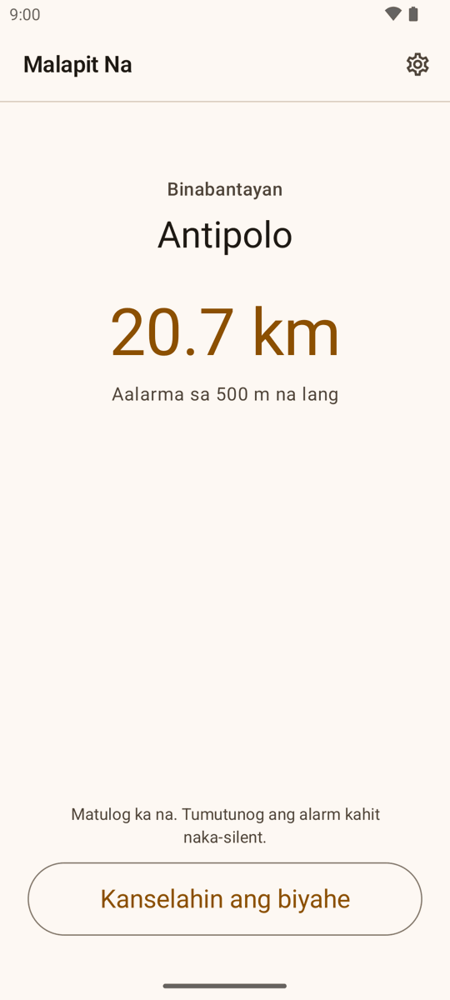
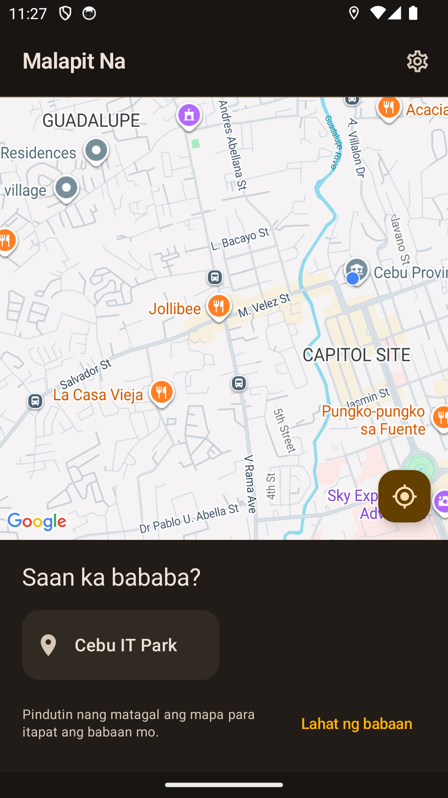
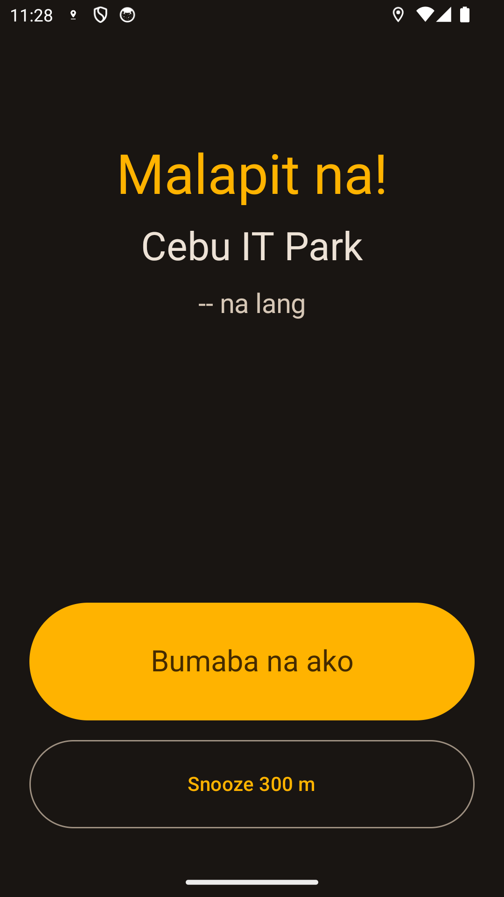

Piliin ang babaan
Mag-drop ng pin sa mapa o gamitin ang saved na babaan para sa madalas mong biyahe.
Piliin kung saan ka bababa at patutunugin ng Malapit Na ang destination alarm bago ka dumating—kahit naka-lock ang screen.
Malapit na Walang account. Walang ads. English + Filipino.
Mag-drop ng pin sa mapa o gamitin ang saved na babaan para sa madalas mong biyahe.
Pumili ng distance para sa jeep, bus, UV Express, probinsyang bus, o tren.
May ride notification habang aktibo, tapos gigisingin ka ng alarm malapit sa babaan.


Nananatili sa device mo ang aktibong biyahe, mga saved na babaan, settings, at ride history. Walang Malapit Na account, ads, Fri Vei As analytics, o backend.
Basahin ang privacy policy →Para sa mga Android commuter sa Pilipinas.